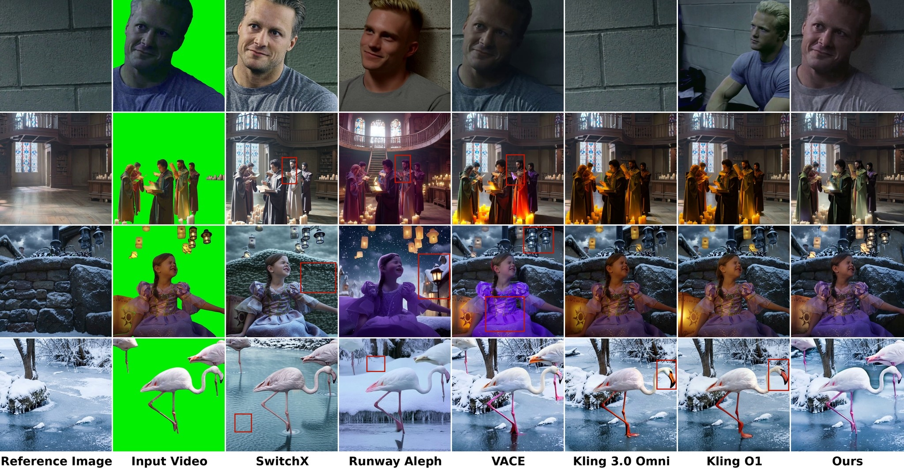
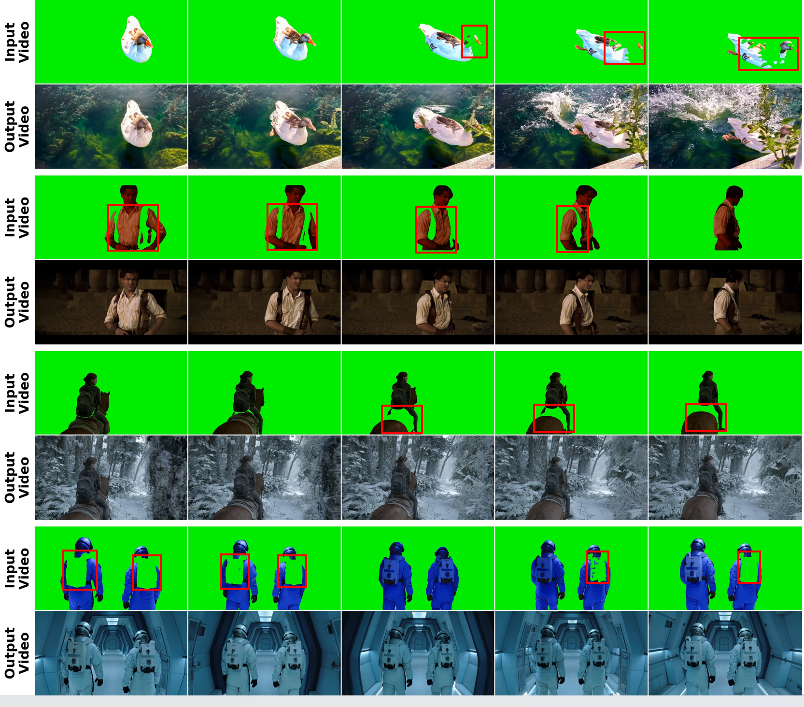

Given a foreground video and background reference images, our method synthesizes a complete video with camera-aware background motion, foreground consistency, and scene-consistent relighting at 1080P resolution.
Abstract
We present PAI-Studio, a new reference-conditioned video synthesis task that addresses a long-standing challenge in cinematic background replacement: generating dynamic backgrounds aligned with foreground motion while preserving foreground identity, matching reference scene appearance, and achieving globally consistent illumination with realistic foreground relighting. Existing open-source systems and commercial APIs cannot simultaneously ensure motion-consistent background generation, high-fidelity foreground relighting and foreground identity preservation, often resulting in static backgrounds, inconsistent boundaries, and noticeable compositing artifacts. To bridge this gap, we build upon a Diffusion Transformer video backbone and reformulate the problem as an in-context conditional generation task. Through bidirectional attention, our model jointly captures foreground dynamics and background reference information within a unified architecture. We further construct a 30K-scale dataset sourced from high-quality films and online videos to support this task. Extensive evaluations demonstrate that our method significantly outperforms existing open-source and commercial API solutions.
Dataset: CineStudio
Overview of the CineStudio data construction pipeline.
Method
Overview of the PAI-Studio architecture. Multi-condition inputs—including multiple background reference images, the illumination-perturbed foreground video, a structured prompt JSON, and the denoising video—are encoded into tokens and concatenated. A multi-modal attention model leverages bidirectional attention to model their global correlations. In addition, Temporal Positional Encoding (PE) Cloning is introduced to precisely control the temporal placement of multiple background images in the generated video.
Generation Results
Comparison Results

Qualitative comparison against the open-source method VACE and commercial systems (SwitchX, Runway Aleph, Kling 3.0 Omni, Kling O1). Given the background reference image and the green-screen input video, our method synthesizes backgrounds that stay faithful to the reference scene while preserving foreground identity, harmonizing illumination, and producing clean edges. Baselines instead exhibit reference mismatch, foreground identity drift, and boundary/compositing artifacts (highlighted by red boxes).
Ablation Study
Ablation study. (a) Illumination Adaptation: without it, the foreground lighting is not adapted to the target environment, leaving the composite poorly integrated with the background. (b) Positional Encoding: without it, the model cannot anchor the background reference images to their temporal locations, causing structural drift across the sequence. Each block compares the ablated model (top row) against the full model (bottom row) under identical background references and inputs.
Edge Harmonization
Superior edge harmonization. Compared to baselines that suffer from severe green spill and boundary artifacts (highlighted by red boxes), our model generates clean, natural edges without residual green contamination.
Robustness to Imperfect Segmentation

Robustness to imperfect foreground segmentation. We highlight four challenging cases where the input green-screen videos (top rows) contain mask defects, as indicated by the red bounding boxes. These include severely corrupted body parts, arbitrary holes, and artificial occlusions. Without any explicit inpainting prompts, our model (bottom rows) robustly reconstructs the missing foreground structures while seamlessly compositing them into the generated backgrounds with global illumination and structural harmony.
Multi-Frame Background Control
Effect of multi-frame background control. Comparing inference results conditioned on 1, 2, and 3 background reference images. The 3-reference control effectively anchors the background at the beginning, middle, and end temporal locations, yielding the most temporally coherent results that closely match the ground truth (GT). Fewer reference frames lead to information deficits at unconditioned time steps, causing structural deviations and abrupt disappearance or morphing of background objects.
Generalization to Unseen Regions
Generalization to unseen regions. Under large camera and subject motion, regions of the scene are revealed that have no corresponding background reference. Given only the first frame as the background reference, our 5B DiT synthesizes plausible textures for these newly exposed regions, mitigating severe occlusion and unseen-region gaps without any extra inference-time modules.
Failure & Extreme Cases
Failure & extreme case analysis. From left to right: (1) Extreme motion—intense dynamics may lose high-frequency detail, causing blur; (2) Poor masks—intentionally corrupting the input foreground (green rectangle) demonstrates robust autonomous inpainting of the missing regions; (3) Mismatched references—forcing a dynamic subject into a narrow background causes the model to reduce the subject's scale to fit the background layout.
Quantitative Comparison
Method
MSE ↓
SSIM ↑
LPIPS ↓
Motion Cons. ↑
Edge Quality ↑
FG-BG Fusion ↑
Illum. Harmony ↑
Single
Multi
Single
Multi
Single
Multi
Single
Multi
Single
Multi
Single
Multi
Single
Multi
VACE (Open-source)
0.0270
–
0.595
–
0.393
–
0.792
–
7.19
–
7.33
–
7.67
–
Kling O1 (Commercial)
0.0282
0.0190
0.646
0.682
0.402
0.341
0.706
0.721
8.44
9.04
7.88
8.20
7.62
7.44
Kling 3.0 Omni (Commercial)
0.0288
0.0210
0.592
0.622
0.414
0.370
0.787
0.715
8.12
8.40
7.68
7.96
7.92
7.44
Runway Aleph (Commercial)
0.0692
–
0.413
–
0.657
–
0.323
–
5.54
–
4.38
–
5.88
–
Switchx (Commercial)
0.0320
–
0.668
–
0.415
–
0.676
–
7.08
–
6.36
–
7.00
–
Ours
0.0164
0.00645
0.717
0.789
0.303
0.197
0.872
0.894
9.17
9.62
8.46
9.33
9.11
9.61
Quantitative comparison on the Cine-Restore subset under both single-frame and multi-frame settings. The last three metrics are evaluated via Gemini-based perceptual scoring (scale 1–10), whereas the rest are standard algorithmic metrics. Multi-frame results are reported only for methods that support multi-frame control.
Gemini-based Perceptual Evaluation
Method
Motion Cons. ↑
Edge Quality ↑
Fg. Pres. ↑
FG-BG Fusion ↑
Illum. Harmony ↑
VACE (Open-source)
6.92
7.82
2.44
7.04
8.38
Kling O1 (Commercial)
7.12
8.04
6.48
7.36
7.72
Runway Aleph (Commercial)
6.21
7.21
6.38
6.29
7.29
Kling 3.0 Omni (Commercial)
7.32
7.80
5.96
6.76
8.52
Switchx (Commercial)
7.12
7.40
8.88
6.16
7.88
Ours
8.16
8.86
9.58
8.40
9.22
Gemini-based perceptual evaluation on the Cine-NBG subset. Only Gemini-based scores (scale 1–10) are reported as no ground-truth video is available.